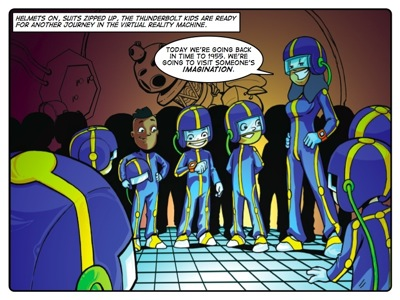
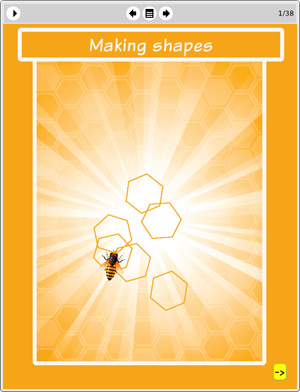

Story: The River of Dreams
Theme: Changing your point of view.
The Thunderbolt kids use the virtual reality machine to explore the imagination and artwork of MC Escher. When they enter the artwork, perspective is distorted as up and down and left and right often swap. The kids are enthralled but Lazlo keeps mocking Jojo and claiming that he is too much of a jock to appreciate the experience. When the kids return to class Tia sets them a challenge: they have to find the odd one out among three objects suspended in coloured tubes, high off the ground. Jojo stands on a chair to get a better look. Or rather a look from a different perspective.
That night Jojo dreams he is trapped in one of Escher's drawings. To escape from some strange creatures he must suspend his own point of view and adopt Escher's strange perspective that if he swims straight along a river he will actually travel upwards. When he wakes up from the dream he realises that Tia's three objects only look different from each other depending on your point of view. When he explains this to the class he gets his own back on Lazlo, who previously went out of his way to mock his intelligence.
This story brings the concept of perspective, or point of view, down to a physical level. Entering the world of Escher's art provides a rich landscape for exploring perspective because the artist cheated and played with perspective in his drawings to spectacular effect.
Jojo’s dream is a metaphor for changing your point of view. That is why his dream is so strange and threatening: changes of perspective can be scary. But, as Tia says, “sometimes they can help us to think about things in new ways.” This metaphor will teach your learners that it’s okay to be scared of the unknown but also that knowledge is power and can cause unfamiliar perspectives to become familiar and therefore no longer scary.
Activity: The Shapes Activity
This activity challenges learners to construct a new personal perspective on shapes, i.e., a physical perspective. By challenging the learners to walk out shapes on the floor and then describe their experience in words, we want them to internalise a physical point of view for the form of each shape. This will help prepare them for the task of programming eToys to automatically draw each shape.

The eToys project: Making
shapesIn this project learners follow Jojo’s instructions and discover how to leave pen trails and make shapes in eToys. Jojo starts out by getting learners to move a “Jojo bot” in a playfield, and to leave a pen trail. Then Jojo shows learners how to create a script to automate the creation of a triangle, a square, a pentagon, etc. Eventually learners construct a generalised “Draw” script which draws a closed figure given any number of sides. Learners can then experiment to see what happens as the number of sides becomes progressively larger and the polygons become more and more like a circle.